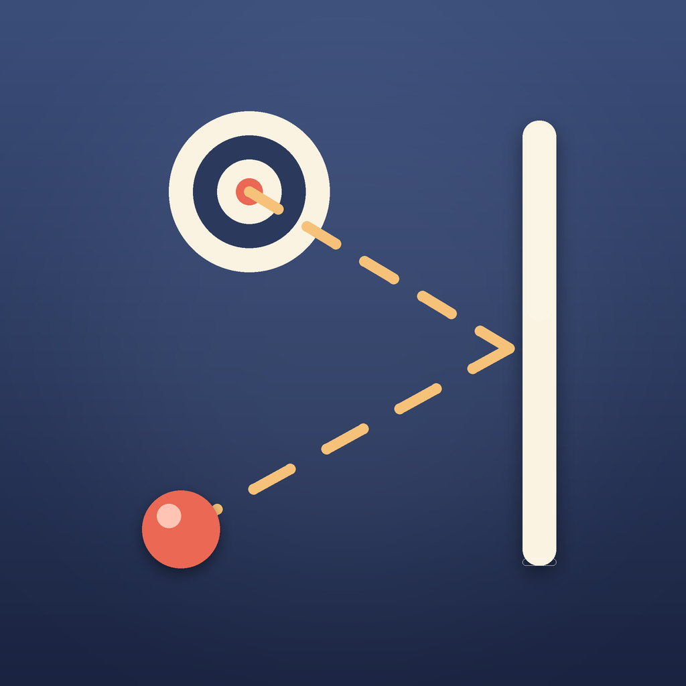

Support
Quiet Shot
Aim once, fire, and predict how a ray reflects from fixed mirrors to clear every target. Adjust your angle and retry without a timer. Explore eight original boards and save progress locally. A shot stops when targets are cleared, it leaves the board, or the four-reflection limit is reached.
Get help
Email hi@mosselora.com with your device model and what happened. We read every message.
Your progress
Progress is saved on your device only. Deleting the app removes it; there is no cloud backup.